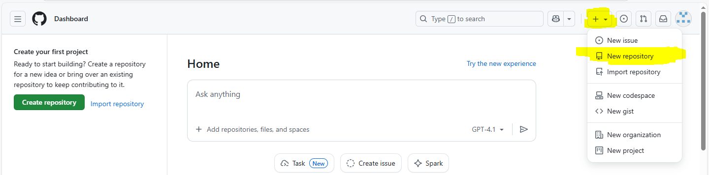
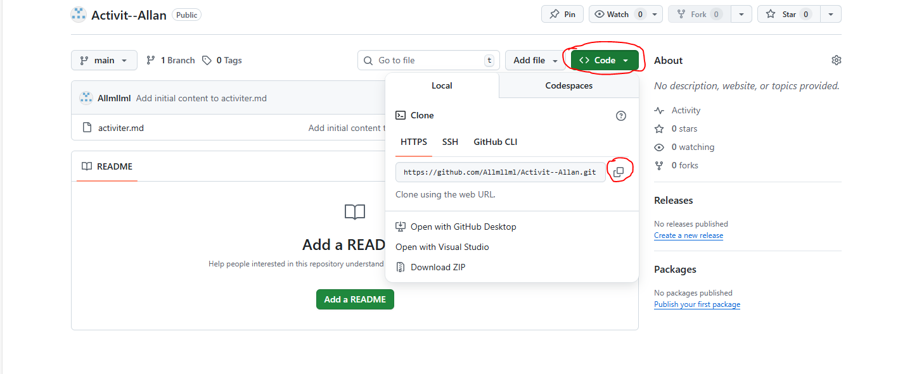

Ouvrir une invite de commande (cmd)
Taper dans le cmd : git version

Si la commande affiche une version, Git est déjà installé. Sinon, installer Git :
Installer GitAller dans un dossier documents : cd Documents
Enregistrez-vous sur Git :
git config --global user.name "Prénom Nom" git config --global user.email prenom.nom@example.com
Connectez-vous ou créez un compte GitHub
Créer un nouveau dépôt
Nommer le répertoire : Activité-Prénom
Créer un fichier nommé activiter.md

Copier la phrase suivante dans le fichier :
Je m’appelle
puis effectuer un commit.
Récupérer l'URL de votre dépôt
Cloner votre dépôt :
git clone VOTRE_URL
Modifier activiter.md dans Notepad++ pour ajouter votre prénom
Aller dans votre dossier : cd VOTRE_DOSSIER
Puis vérifier les modifications :
git status
Préparer le fichier au commit :
git add activiter.md
Enregistrer localement avec un commit :
git commit -m "DONNER UN NOM AU COMMIT"
Vérifier :
git log --oneline git show
Envoyer sur GitHub :
git push
Retourner sur GitHub pour vérifier que le commit a bien été effectué